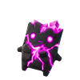

Spritedokku
Reglas del Juego:
- Encuentra los 8 sprites escondidos.
- Solo puede haber 1 sprite por cada color.
- Solo puede haber 1 sprite por fila y por columna.
- Los sprites no pueden tocarse (ni en diagonal).
-
Clic izquierdo
Tocar
para poner o quitar un sprite.
-
Clic derecho
Mantener presionado
para marcar (❌) casillas vacías.